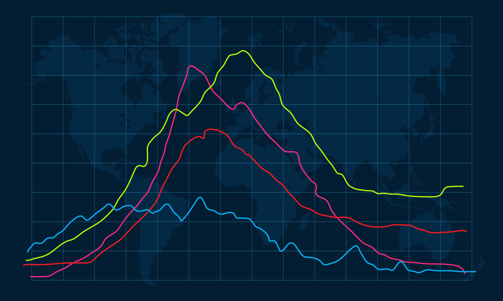
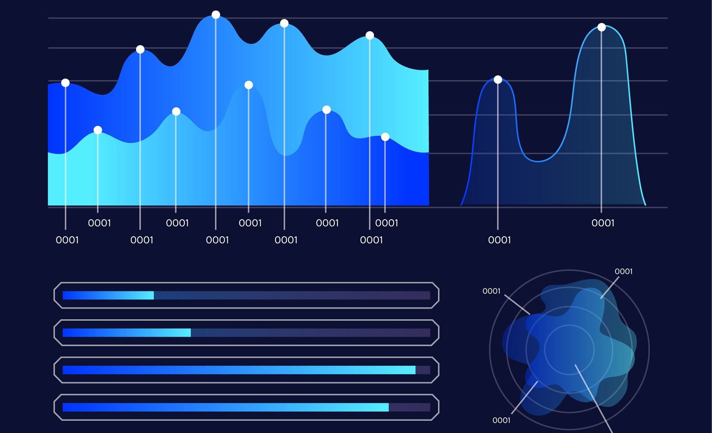

Malaysia Job Market Insights
A Dashboard for Job Market Analysis
Explore job trends, skill demand, and employment patterns with real-time data visualization from Malaysia’s top job portals.

Job Trends
Visualize how job demands evolve across industries and locations.

Skills in Demand
See which skills are currently most sought after by employers.

Forecast Insights
Get predictive insights into future hiring patterns and growth sectors.